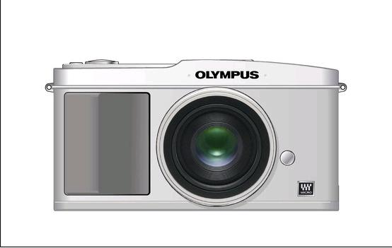
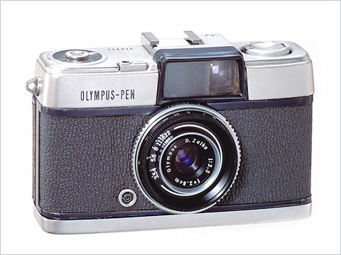

|
Keenly Anticipating the Olympus PenVersion 1.1, © 2009 by Dale Cotton, all rights reserved  Fig. 1: Rumoured E-P1 concept sketch For the past few weeks as I write this in early June '09 Olympus has been running a teaser ad campaign on its web site. At present it simply memorializes the 1959 introduction of their 1/2 frame 35mm pocket camera, the Olympus Pen; but anyone following the digital camera microcosm will have already made the connection with their previous announcement of their intention to do an interchangeable lens micro 4/3 design. Coming as no surprise to anyone, a Chinese web site recently leaked photos and rumoured specs of Olympus' first micro 4/3 camera, the Pen E-P1. This looks to be roughly the same compact dimensions as the original film Pen camera and even sports a very retro/minimalist design aesthetic, but instead of film will apparently house an image-stabilized 12 mp 4/3 sensor, and will have no finder, instead combining live view plus a fixed 3" LCD for composition and review. The online reaction to this design from the photo enthusiast chattering class has been a perfect mixture of excitement and disappointment. I can sympathize with the disappointment re lack of a finder and fully expect that to translate into reduced sales figures for this camera. Of course the main point of the Pen teaser is to preempt that criticism as much as possible, but that just isn't going to happen for those who use a camera for primarily static compositions, such as landscape or architecture. A micro 4/3 camera with finder already exists in the Panasonic G1; but the G1 is not really any smaller than the ubiquitous Canon Rebel dSLRs and certainly no more pocketable. The E-P1 is going to be significantly smaller than that. By forgoing a finder it becomes essentially the smallest possible 4/3 camera. While certainly not shirt-pocketable, it should slip nicely into a jacket pocket, purse, or shoulder bag, which means it really will be that long-sought carry-everywhere camera with high-IQ raw output. Also, since it sports an interchangeable lens design, camera with body cap can go in one pocket and the lens in another. I say "long-sought", but in doing so refer again to the photo enthusiast chattering class – AKA, the prosumer hobbyist. In contrast, sales volumes are primarily driven by the mom, pop, and teenager masses. A $200 point&shoot digital compact already possesses features and image quality more than sufficient to satisfy the wants of this market, which is primarily driven by styling and image. Those who decide to move up to a higher price bracket will be looking for something that looks like a real camera, in other words, the familiar black SLR. Olympus already has this base nicely covered with some of the smallest and lightest (although, not least expensive) dSLRs on the market. So clearly, Olympus has to see the digital Pen in the same wise as the original film Pen, namely: a specialized niche market device. If the majority of serious photographers looking for a pocketable camera with serious image quality will reject the E-P1 out of hand due to its lack of view finder, then upon whom is Olympus pinning its hopes for enough sales to at least not have a flop on their hands?
Fig. 2: SLR stare Anyone who has ever done street or candids with a digital p&s will have realized that doing so takes inconspicuousness to a whole new level. Any camera you hold to your eye marks you as a serious shooter and immediately makes people self-conscious. Put a black SLR to your eye and you may as well be aiming a howitzer (see Fig. 2). In contrast, people assume that anyone who is holding a smallish camera out at arm's length to frame is taking amateur vacation/family snapshots and is therefore either focused on family members or some building or other aspect of the scenery, just as they themselves would be doing in the same circumstances.
Fig. 3: P&S fun So, by building a 4/3 camera that looks and acts like a p&s and that's as small and light as possible while still housing the guts of a "real" photographic tool, Olympus has designed what may well become the prototype for the street tool of choice for an entire generation. One of the leaked photos shows a video mode icon on the mode dial. If that's valid, then the E-P1 will presumably also have the quiet but not silent mechanical shutter of the G1.  Fig. 4: Original Olympus Pen rangefinder (no meter, top shutter speed 1/200th sec.) Before digital, the film rangefinder, such as the original Olympus Pen and the Leica M series, held honours as the camera design of choice for inconspicuous photography. In explaining Why it has to be a Leica, Mike Johnston of The Online Photographer made the excellent point that a frame line range finder is essentially no finder at all - you're still usually seeing more of the scene than will be captured. The trick to using an LCD for framing is ... not to use the LCD. Look beyond the camera at the scene itself to find your composition; then, having found it, glance at the LCD to verify that the camera is cropping the same frame as the one you've just decided on. I've done this for years now with an LX1 p&s and have long since adapted to the point that this is my preferred method of framing when doing street, candids, or any type of shooting in which the situation in front of the camera is especially complex and/or fluid. Assuming zone focusing, a pre-set exposure, and dSLR response times, then the camera and image capture should essentially disappear from your awareness leaving you totally immersed in the scene and as close to inconspicuous as possible. ------------------- Footnote 1: the Panasonic G1 stirred a lot of interest when people discovered that an adapter was available to allow use of M mount prime lenses on that camera. Assuming the E-P1 also accepts an M mount adapter but in addition offers in-body IS and a more rangefinder-like styling, I expect a similar level of interest in this camera. Many have M mount lens; few have a Leica M8 or Epson RD-1. Update: Two caveats: one is that, like the G1, the E-P1 has a 2x crop sensor, so all M mount lenses will essentially have their focal length doubled. Secondly, there is so far no indication that there will be any accurate method for precision-focusing these manual focus lenses. Footnote 2: there has been some concern expressed by the $990US price quoted on the rumour page. My guess is that if the price proves accurate it would be for the camera plus kit 14-45 f/3.5 to f/5.6 zoom, not for the body plus kit lens plus the 17mm f/2.8 prime. The Panasonic video-enabled GH1 sells for something like twice the price of the G1, and the E-P1 has video.
|